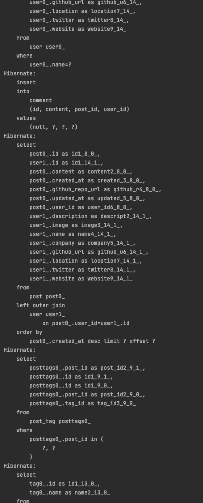
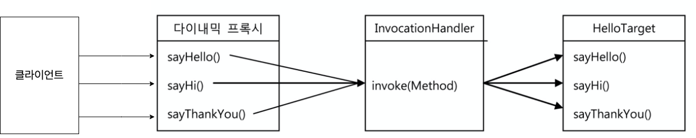
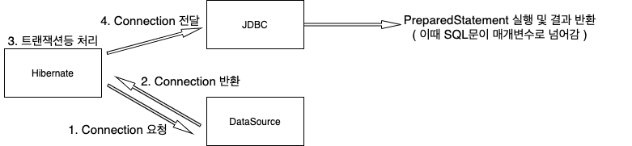
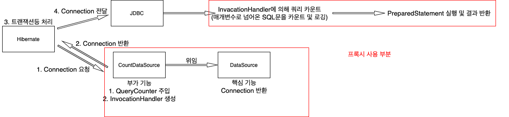
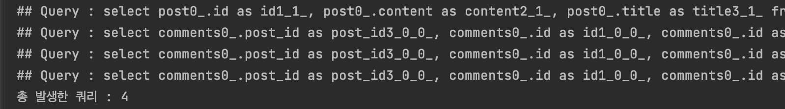
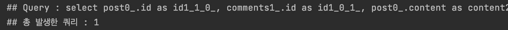

다이내믹 프록시를 이용한 쿼리 카운팅 적용기 (feat. 캐싱 테스트)
목차
안녕하세요! 마크입니다 :)
들어가며
주변에서 특정 비즈니스를 수행하면서 몇 개의 쿼리가 날라가는지 직접 확인하는 장면을 많이 봤다.
적어도 필자는 그랬다.

문제는 테스트할 때 위와같이 쿼리가 굉장히 많이 날라가며, 어떤 코드가 몇 개의 쿼리를 날렸는지 파악하기 힘들다.
또한, N + 1 문제와 캐싱 테스트는 쿼리가 얼마나 날라갔는지가 굉장히 중요한 지표가 된다.
필자는 캐싱 테스트를 위해 쿼리 카운터를 구현하게 되었다.
이번 글은 이렇게 특정 시점부터 특정 시점까지 몇 개의 쿼리가 날라가고, 어떤 쿼리가 날라갔는지 쉽게 확인할 수 있는 커스텀 방법을 소개하고자 한다.
핵심을 말하자면, 다이내믹 프록시를 이용하여 DataSource의 getConnection부분을 프록시로 감싸는 방법이다.
사전 지식
본격적으로 시작하기전에 우선 사전 지식 두 가지가 있다.
- JDBC 동작 과정
- 다이내믹 프록시
JDBC와 DataSource 동작 과정
🤔 JDBC와 DataSource 동작 과정은 왜 알아야하는가?

출처: https://terasolunaorg.github.io/guideline/5.1.0.RELEASE/en/ArchitectureInDetail/DataAccessJpa.html
- JDBCTemplate, Hibernate등 여러 가지 라이브러리 혹은 프레임워크 모두 JDBC를 사용하여 DB와 통신을 한다.
- 그리고 DataSource를 통해 DB 커넥션을 위한 정보와 커넥션을 제공받는다.
결론적으로 JDBC와 DataSource를 통해 커스텀해야 쿼리 카운팅을 할 수 있다.
🤔 도대체 어떻게 한다는 것인가?
코드를 통해 어느 부분을 커스텀하면 쿼리 카운팅이 가능한지 살펴보자.
DataSourceConfig
@Configuration
public class DataSourceConfig {
@Bean
public UserDao userDao() {
return new UserDao(dataSource());
}
@Bean
public DataSource dataSource() {
DriverManagerDataSource dataSource = new DriverManagerDataSource();
dataSource.setDriverClassName("org.h2.Driver");
dataSource.setUrl("jdbc:h2:tcp://localhost/~/toby");
dataSource.setUsername("sa");
dataSource.setPassword("");
return dataSource;
}
}
UserDao
public class UserDao {
private final DataSource dataSource;
public UserDao(DataSource dataSource) {
this.dataSource = dataSource;
}
public void save(User user) throws SQLException {
Connection conn = null;
PreparedStatement ps = null;
try {
// DataSource로부터 Connection을 가져옴.
conn = dataSource.getConnection();
// Connection으로부터 Statement를 가져와 SQL 쿼리를 실행한다.
ps = conn.prepareStatement("insert into users(id, name, password) values(?, ?, ?)");
ps.setString(1, user.getId());
ps.setString(2, user.getName());
ps.setString(3, user.getPassword());
ps.executeUpdate();
} catch (SQLException e){
...
} finally {
...
}
}
...
}
전형적인 난감한 UserDao 예시이다.
🤔 위 코드에서 쿼리 카운팅을 해볼 커스텀할 부분을 찾았는가?
// DataSource로부터 Connection을 가져옴.
conn = dataSource.getConnection();
// Connection으로부터 Statement를 가져와 SQL 쿼리를 실행한다.
ps = conn.prepareStatement("insert into users(id, name, password) values(?, ?, ?)");
바로 SQL 쿼리가 매개변수로 주어지는 conn.preparedStatement 메서드 이다.
즉, DataSource에서 반환하는 Connection을 프록시로 감싸서 preparedStatement가 호출될 때 해당 매개변수를 카운팅하면 된다.
아직 어려운가? 걱정말라. 밑에서 커스텀하면서 이해가 될 것이다.
다이내믹 프록시
위에서 언급했듯이 Connection을 프록시로 감싸야 쿼리 카운팅이 가능하다.
🤔 다이내믹 프록시 동작 원리

- 일반적인 프록시와 다르게, 다이내믹 프록시는 모든 요청을
InvocationHandler에 위임한다.- 즉,
sayHello,sayHi,sayThankYou등 메서드를 호출하면 리플렉션을 통해Method와args로 변환되어InvocationHandler의invoke()에 넘겨진다. - 부가로직은 기존의 프록시처럼
InvocationHandler에 정의해두면 된다.
- 즉,
- 구체적으로 보면 다이내믹 프록시 객체가 클라이언트의 모든 요청을 리플렉션 정보로 변환해서
InvocationHandler구현 객체의invoke()메서드로 넘긴다.public Object invoke(Object proxy, Method method, Object[] args)- 만들어진 다이내믹 프록시는 메서드 요청을 리플렉션을 이용해 메타 데이터를 뽑아내고,
Method와 매개변수와 함께InvocationHandler.invoke에게 메시지 요청한다.
더 자세한 내용은 다이내믹 프록시 정리 글을 참고.
🤔 일반적인 프록시도 있는데 왜 다이내믹 프록시를 사용해야하는가?
필자는 처음에 의문이었다. 하지만 구현하면서 의문점을 해결할 수 있었다.
프록시의 문제점중 하나는 부가기능이 필요없는 메서드도 구현해서 타깃으로 위임하는 코드를 일일이 만들어줘야한다는 것이다.
심지어 타깃 인터페이스의 메서드가 추가되거나 변경될 때마다 함께 수정해줘야 한다.
현재 프록시를 통해 커스텀해야하는 인터페이스는 Connection이다.
Docs - Connection를 가서 메서드 개수를 보면 알겠지만, 10개가 훌쩍 넘는다.
반면에, 커스텀에 사용되는 메서드는 prepareStatement메서드 뿐이다.
즉, 관련없는 10개가 넘는 메서드를 모두 위임해주는 코드를 작성해줘야한다.
이런 수고스러움을 해결하기 위해서 다이내믹 프록시를 이용한다.
쿼리 카운팅 구현
이제 본격적으로 쿼리 카운팅을 적용시켜 N + 1 문제를 해결본다.
프록시를 적용하는 것을 큰그림으로 그려보면 다음과 같다.

적용전

적용후
카운트 데이터 객체 구현
Count
@Getter
public class Count {
private long value;
public Count(long value) {
this.value = value;
}
public Count countOne() {
return new Count(++value);
}
}
QueryCounter
@Getter
public class QueryCounter {
private Count count;
private boolean countable;
public QueryCounter() {
countable = false;
count = new Count(0L);
}
public void startCount() {
countable = true;
count = new Count(0L);
}
public void countOne() {
if (!isCountable()) {
throw new RuntimeException("[Error] 아직 카운트를 시작하지 않았습니다.");
}
count = count.countOne();
}
public void endCount() {
countable = false;
}
}
Connection 프록시 구현
ProxyConnectionHandler
public class ProxyConnectionHandler implements InvocationHandler {
private final Connection connection;
private final QueryCounter queryCounter;
public ProxyConnectionHandler(Connection connection, QueryCounter queryCounter) {
this.connection = connection;
this.queryCounter = queryCounter;
}
// 쿼리 카운팅 (부가 기능 구현)
@Override
public Object invoke(Object proxy, Method method, Object[] args) throws Throwable {
if (queryCounter.isCountable()) {
if (method.getName().equals("prepareStatement")) {
return getConnectionWithCountQuery(method, args); // 핵심 로직 호출 및 반환
}
}
return method.invoke(connection, args); // 핵심 로직 호출 및 반환
}
// 카운트
private Object getConnectionWithCountQuery(Method method, Object[] args)
throws InvocationTargetException, IllegalAccessException {
PreparedStatement preparedStatement = (PreparedStatement) method.invoke(connection, args);
for (Object statement : args) {
if (isQueryStatement(statement)) {
System.out.println("## Query : " + (String) statement); // 추후에 로깅으로 수정 예정
queryCounter.countOne();
break;
}
}
return preparedStatement;
}
// preparedStatement가 호출될 때 해당 매개변수가 String 형식이며, select으로 시작하는 쿼리인지 체크.
private boolean isQueryStatement(Object statement) {
if (statement.getClass().isAssignableFrom(String.class)) { // 매개변수가 String인지 확인
String sql = (String) statement;
return sql.startsWith("select");
}
return false;
}
}
어려워 보이지만, 사실 간단한 코드이다.
다이내믹 프록시를 이용하여 invoke에 넘어오는 호출 메서드 정보를 바탕으로 PreparedStatement메서드면 해당 메서드의 매개변수를 뽑아내서 카운팅하는 것이다.
ProxyConnectionHandler - 소스 코드
DataSource 프록시 구현
CountDataSource
public class CountDataSource implements DataSource {
private final QueryCounter queryCounter;
private final DataSource targetDataSource;
public CountDataSource(QueryCounter queryCounter, DataSource targetDataSource) {
this.queryCounter = queryCounter;
this.targetDataSource = targetDataSource;
}
@Override
public Connection getConnection() throws SQLException {
Connection connection = targetDataSource.getConnection();
return (Connection) Proxy.newProxyInstance(
connection.getClass().getClassLoader(),
connection.getClass().getInterfaces(),
new ProxyConnectionHandler(connection, queryCounter)
);
}
... 타깃으로 위임하는 코드
}
이제 Connection에 프록시를 설정해주기 위해서 기존의 DataSource의 프록시 역할을 하는 CountDataSource 생성해주었다.
getConnection제외하고는 모든 메서드에 위임하는 코드를 삽입해줘야한다.프록시의 단점이기도 하며, 이 부분도 다이내믹 프록시를 사용해도 좋다.
하지만 필자는 잦은 리플렉션은 성능상 좋지 않고, 메서드의 개수가 적으므로, 이 부분은 일반적인 프록시 패턴을 사용했다.
DataSource 설정
DataSourceConfig
@Configuration
public class DataSourceConfig {
@Bean
public QueryCounter queryCounter() {
return new QueryCounter();
}
@Bean
public DataSource dataSource() {
DataSource dataSource = DataSourceBuilder.create()
.driverClassName("org.h2.Driver")
.url("jdbc:h2:mem:~/test;MODE=MySQL;DB_CLOSE_DELAY=-1;DB_CLOSE_ON_EXIT=FALSE")
.username("SA")
.password("").build();
return new CountDataSource(queryCounter(), dataSource);
}
}
QueryCount를 통해 몇 번 쿼리가 날라갔는지 확인해야하기에, 빈으로 등록하여 여러 테스트 코드에서 주입받아 사용할 수 있도록 한다.
DataSource는 위에서 만든 프록시 객체 (CountDataSource)를 반환하도록 설정한다.
가능한 쉽게 코드를 설명할 수 있도록, 쿼리를 로깅하는 기능을 제외했다.
사용법
queryCounter.startCount(); // 카운트 시작
xxxrepository.findById();
xxxrepository.findById();
queryCounter.getCount(); // 개수 확인
queryCounter.endCount(); // 카운트 종료 및 리셋
사용법은 위와 같이 간단하다.
- 카운트 시작
- 쿼리 실행
- 카운트 결과 확인
- 카운트 종료 및 리셋
4번에서 다시 1번으로 가는 것도 가능하다.
사용 예시
쿼리 카운팅의 예시를 살펴본다.
캐싱 테스트
캐싱은 테스트하기 생각보다 까다롭다. 하지만, DB에 쿼리가 날라 갔는지만 확인가능하다면 쉽게 테스트할 수 있다.
실제 깃-들다에서는 캐싱을 테스트하기 위해서, QueryCounter를 사용한다.
@DisplayName("캐싱 - 비로그인 홈피드 조회시 두 번째 조회부터는 캐시 저장소에서 가져온다. (현재 페이지당 쿼리는 6번)")
@Test
void readHomeFeed_Guest_LatestPosts() {
// given
... 게시물 작성 코드 ...
// when
queryCounter.startCount(); // 쿼리 카운트 시작
postFeedService.homeFeed(homeFeedRequestDto); // 첫번째 조회 (캐싱)
// 두번째 조회 (이때 DB에 쿼리를 날리지 않는다.)
List<PostResponseDto> postResponseDtos = postFeedService.homeFeed(homeFeedRequestDto);
// then
assertThat(queryCounter.getCount().getValue()).isEqualTo(6L); // 쿼리 카운팅을 통한 테스트
}
N + 1 문제 분석
이제 본격적으로 구현한 QueryCounter로 N + 1문제를 살펴봐보자.

N + 1 문제 해결 전
이제 fetch join으로 N + 1을 해결해보고 다시 테스트를 돌려보면 아래와 같이 쿼리 개수가 1로 바뀐 것을 볼 수 있다.

N + 1 문제 해결 후
위와 같이 쿼리 카운팅을 사용하면 N + 1 문제에 대한 분석이 훨씬 쉽다.
마치며
캐싱에 대한 테스트를 위해 쿼리 카운터가 필요하여 구현하다보니 이렇게까지 정리하게 되었다.
이해하고 정리하는데 꽤 힘들었지만, 그래도 그 과정에서 프록시와 다이내믹 프록시, JDBC, Hibernate등의 이해도가 깊어져서 좋은 경험이었다!
이후에도 이와 같이 객체지향을 사용한 커스텀을 더욱 많이 해보리~
아! Thanks to 나봄 (I’m Spring) 그는 G.O.D